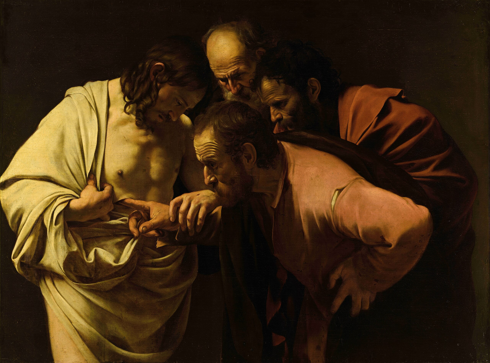
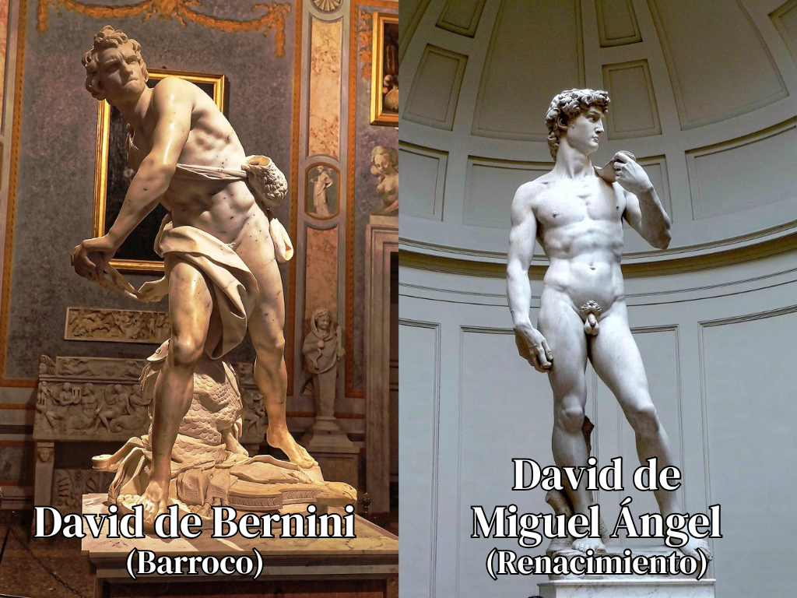
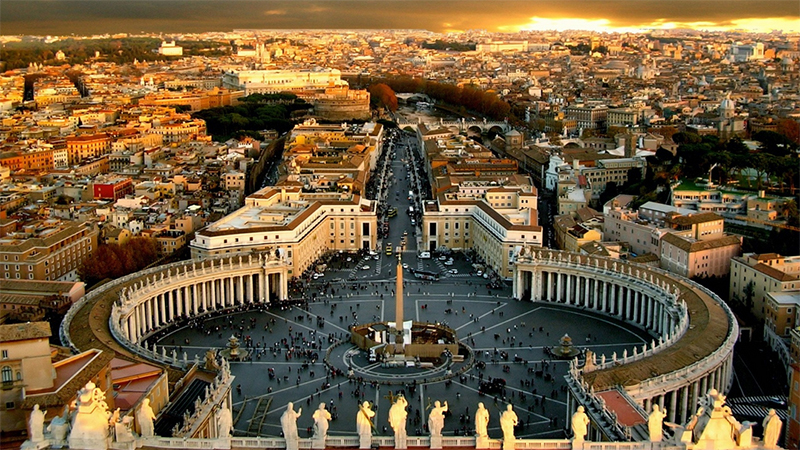
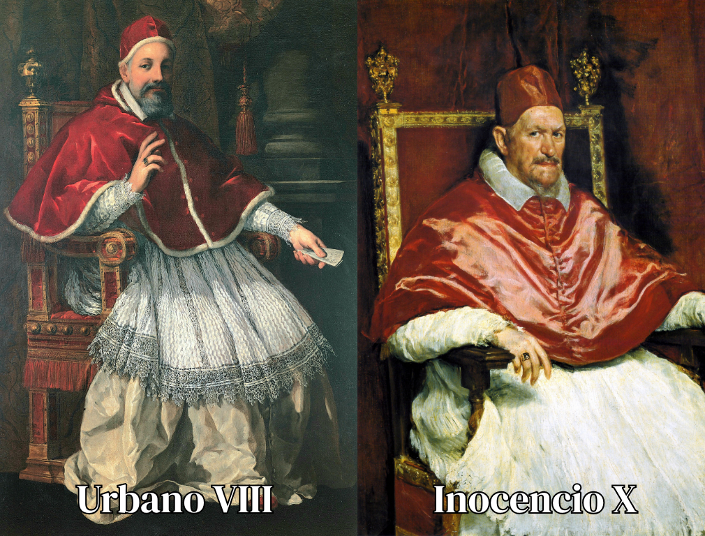

Contexto del Barroco
La Roma del Siglo XVII: el escenario de los genios
¿Qué fue el Barroco?
El Barroco (siglo XVII) fue un período de gran agitación y transformación cultural. Nacido en Roma, fue el arte de la Contrarreforma. La Iglesia Católica usó el arte como una herramienta poderosa para reafirmar su autoridad e inspirar devoción tras el desafío del protestantismo.
Se caracteriza por el drama, el movimiento, la emoción intensa y el uso de la luz y la sombra (claroscuro). En arquitectura, esto se tradujo en edificios que abandonaron las líneas rectas y serenas del Renacimiento por formas curvas, dinámicas y teatrales.


Barroco vs. Renacimiento
El Renacimiento (siglos XV-XVI) buscaba la armonía, la proporción y la serenidad, basándose en las reglas clásicas de la antigüedad. Su objetivo era la perfección racional.
El Barroco, en cambio, fue el arte de la emoción, el drama y el movimiento. Buscaba impresionar, conmover y abrumar al espectador. El Barroco no es estático; es teatral, dinámico y espectacular.
Roma: el centro del mundo
Vivir en la Roma del Siglo XVII era estar en el centro del mundo, pero también en una caótica obra en construcción. La ciudad era un hervidero de actividad que atraía a los artistas más ambiciosos de toda Europa, todos buscando dejar su marca. Era un lugar de contrastes extremos: de gran piedad religiosa y lujo papal, pero también de política feroz y competencia despiadada.
En este escenario, los artistas debían luchar por el mecenazgo. Conseguir el favor de los grandes patrones (los papas como Urbano VIII o Inocencio X y sus familias) no solo significaba dinero; era una victoria pública que definía carreras. Esta competencia feroz alimentó rivalidades legendarias, siendo la de Borromini y Bernini la más famosa. Cada encargo era una batalla por prestigio, influencia y por la oportunidad de definir la cara de la ciudad.


La Roma de los papas
En la Roma barroca, el mecenazgo era absoluto y personal. El gusto (y la política) del papa reinante lo decidía todo. Urbano VIII (de la familia Barberini) tuvo un favoritismo casi total por Gian Lorenzo Bernini, convirtiéndolo en el "dictador" artístico de Roma. Bernini recibió los encargos más monumentales, como el Baldaquino de San Pedro, mientras que Borromini fue relegado a un papel secundario, a menudo trabajando a la sombra de su rival.
Este sistema de favoritismo podía favorecer o perjudicar drásticamente una carrera. Cuando Inocencio X (de la familia Pamphili) fue elegido, desconfiaba del círculo de Bernini y buscaba nuevos artistas. Este cambio de poder fue la gran oportunidad de Borromini. El nuevo papa le encargó los proyectos más prestigiosos de su carrera, como la increíble cúpula de Sant'Ivo alla Sapienza y la renovación de San Giovanni in Laterano. El gusto de un solo hombre podía hacer o deshacer a un artista.